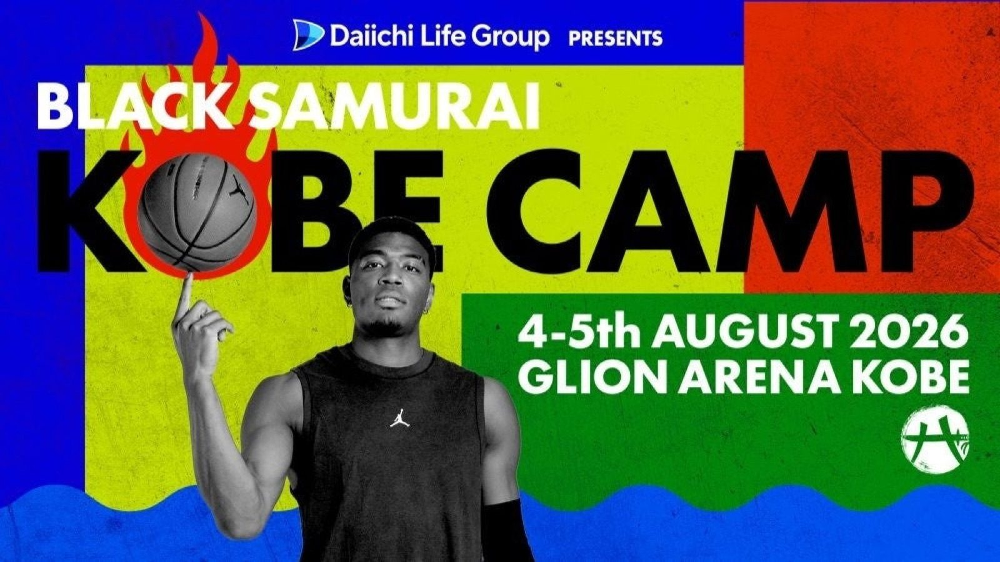

神戸の2日間を、神戸が運ぶ —— G LION GROUPが「BLACK SAMURAI KOBE CAMP」モビリティパートナーに
八村塁選手が主催するバスケットボールイベント「BLACK SAMURAI KOBE CAMP」。2026年8月4日（火）・5日（水）の2日間、会場は兵庫県神戸市のGLION ARENA KOBEだ。そのアリーナに名を冠するG LION GROUPが、OFFICIAL MOBILITY PARTNER（オフィシャルモビリティパートナー）に就任する——株式会社ジーライオンが8月3日に発表した。

公式移動車両は、BMW X7
提供されるのはBMW X7。Kobe BMWハーバー神戸支店からの提供で、八村塁選手をはじめとする関係者・ゲストの移動を支える。リリースが謳うのは「室内空間と静粛性を備えた極上の移動空間」。世界基準の技術と精神を次世代へ伝えるために企画されたキャンプの、コートの外側を受け持つ役回りだ。
「GLION」の名を持つアリーナで
G LION GROUPは1986年3月創業、神戸に本社を置き、国内外33ブランドの正規自動車ディーラーを展開する企業グループ。グループ企業163社、従業員5,792名、拠点503店舗（いずれも2026年3月時点）を数える。会場の名前も、移動の足も、神戸の企業のもの。この街で開かれるキャンプの2日間は、地元がまるごと支える格好になった。
出典: 株式会社ジーライオンプレスリリース「G LION GROUP、八村塁選手主催「BLACK SAMURAI KOBE CAMP」のオフィシャルモビリティパートナーに就任！GLION ARENA KOBEでの開催に伴い、公式移動車両を提供」（PR TIMES・2026年8月3日）
https://prtimes.jp/main/html/rd/p/000000761.000036445.html